Best Practices: POC to Production
Accuracy:
Clarification, reference context, task breakdown, introspection, tool use, evaluations, human in the loop, error flagging, prompt-completion pairs
Security:
Rate limiting, role based access control, row level security, async i-o guardrailing
Latency:
Model optimization, token optimization, streaming, batching, caching
Production:
Managing billing limits, API key management, staging projects, cost optimization, data management, model performance monitoring, model retraining, model deployment, customization, support
Sample Demos
Error Reporting

The user is able to alert an admin about an incorrect response. This prevents user frustration that they've noticed an error but don't have a way to fix it.
Model Training

The user is able to train the model if they like the response they've received. This helps generate the exact same response to the question every future time.
Reference Context

Vanna ingests database schema and uses that reference context to generate accurate SQL.
Problem Solving
Vanna can creatively find answers to remove the frustration of needing to ask for data as exactly stored in the database while also explaining assumptions.
Clarifying Questions

Vanna will clarify vague questions to avoid the frustration of a wrong answer.